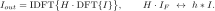
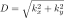
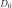
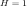
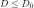
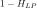
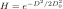
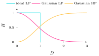
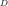

Method


the distance from the (centred) origin and cut-off
:- ideal low-pass:

if
, else 0; ideal high-pass:
; - Gaussian:

, no ringing; - notch / band-stop: zero small neighbourhoods around the peaks of periodic noise (striping).
Every image equals its low-pass plus its high-pass part.
Picture

 versus distance
versus distance 
from the origin of the spectrum: ideal and Gaussian low-pass, and Gaussian high-pass.Example
F = np.fft.fftshift(np.fft.fft2(band))
ky, kx = np.indices(band.shape)
D = np.hypot(ky - band.shape[0] / 2, kx - band.shape[1] / 2)
H = np.exp(-D**2 / (2 * 30**2))
low = np.real(np.fft.ifft2(np.fft.ifftshift(H * F)))
high = band - lowIntuition
Decide which stripe sizes to keep: big stripes are the landscape, small ones are the details and the noise.
Pitfall
The sharp cut of the ideal filter produces ringing (ripples near edges), because its spatial kernel is a sinc; smooth transfer functions avoid it.